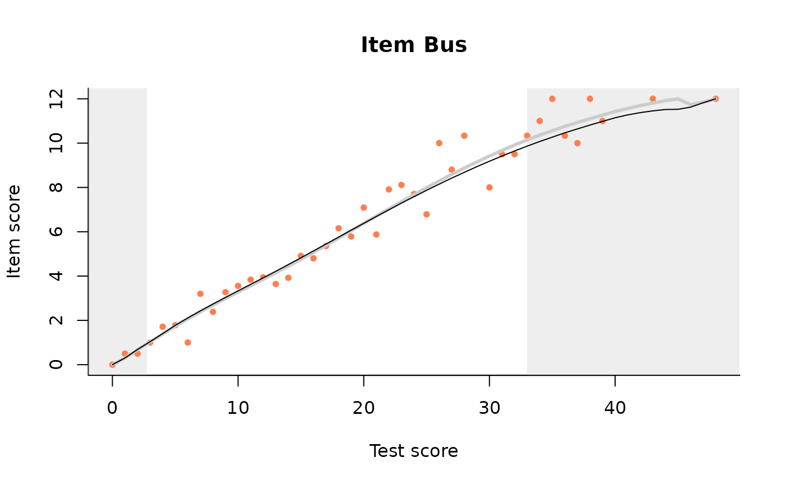
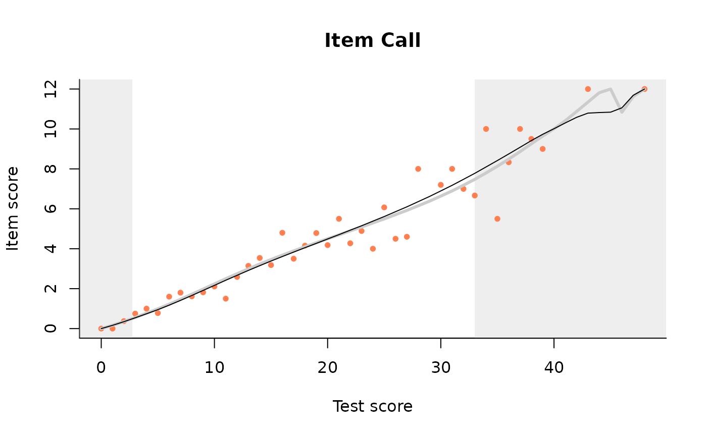
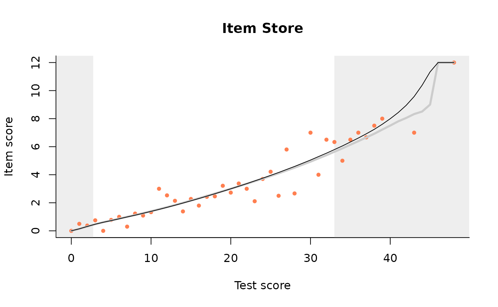
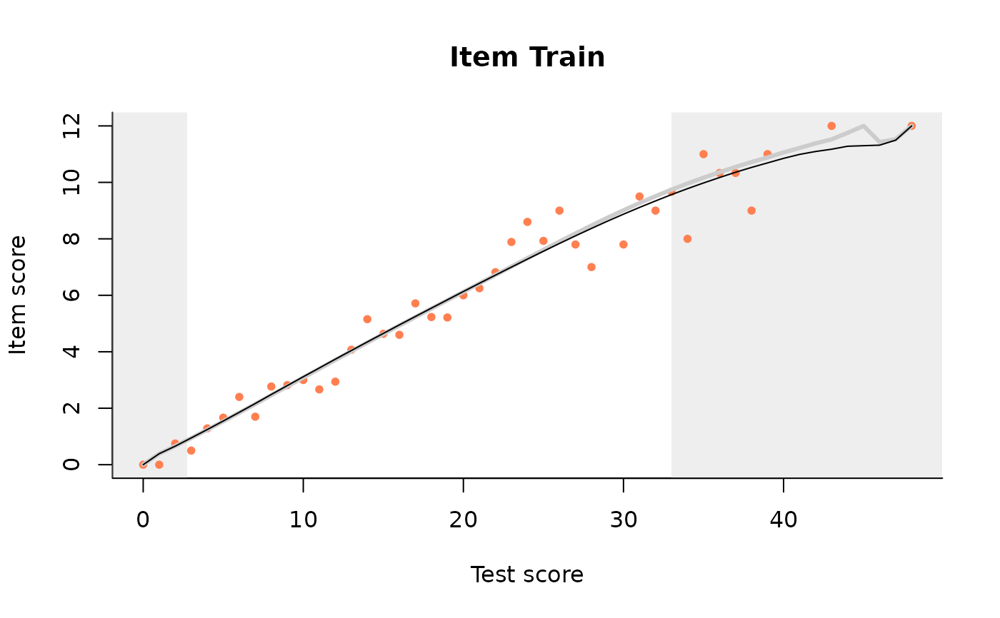

R/interaction_model.R
fit_domains.RdEstimate the parameters of the Rasch model and the Interaction model
fit_domains(dataSrc, item_property, predicate = NULL)An object of class imp holding results
for the Rasch model and the interaction model.
We have generalised the interaction model for items having more than two (potentially, a largish number) of response categories. This function represents scores on subtests as super-items and analyses these as normal items.
db = start_new_project(verbAggrRules, ":memory:")
add_booklet(db, verbAggrData, "agg")
#> no column `person_id` provided, automatically generating unique person id's
#> $items
#> [1] "S1DoCurse" "S1DoScold" "S1DoShout" "S1WantCurse" "S1WantScold"
#> [6] "S1WantShout" "S2DoCurse" "S2DoScold" "S2DoShout" "S2WantCurse"
#> [11] "S2WantScold" "S2WantShout" "S3DoCurse" "S3DoScold" "S3DoShout"
#> [16] "S3WantCurse" "S3WantScold" "S3WantShout" "S4DoCurse" "S4DoScold"
#> [21] "S4DoShout" "S4WantCurse" "S4WantScold" "S4WantShout"
#>
#> $person_properties
#> character(0)
#>
#> $columns_ignored
#> [1] "gender" "anger"
#>
add_item_properties(db, verbAggrProperties)
#> 4 item properties for 24 items added or updated
mSit = fit_domains(db, item_property= "situation")
plot(mSit)




close_project(db)